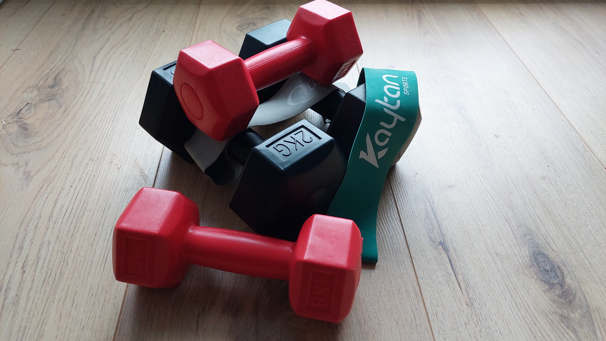

Overgewicht voorkomen/Verliezen
Gezond eten
Er zijn veel verschillende manieren om overgewicht te verliezen/voorkomen. Nummer 1 daarvoor is natuurlijk door gezond te eten en door te letten wat je eet. Een paar tips daarvoor zijn om vaak af te wisselen wat je eet. Geen dingen te eten zoals koek, chips en snacks. Magere vlees en melkproducten eten. Magere melk bevat minder vet en kip bevat ook niet veel vet bovendien zijn eiwitten ook goed voor je. Eet veel groente en fruit. Peulvruchten zoals bruine bonen, kikkererwten en linzen zijn ook goed voor je. Volkoren producten zoals volkoren brood, volkoren pasta en zilvervlies rijst ook doordat ze vezels bevatten waardoor je je langer vol voelt na het eten. Een ander ding dat helpt is om veel water te drinken.

Beweging
Het is heel belangrijk dat niet overeet omdat je als je wilt afvallen meer calorieën moet verbranden dan binnenkrijgt. Daarom maakt het niet uit hoeveel je beweegt als je te veel eet om het bij te houden zelfs met de beweging. De beste advies is om elke dag 60 minuten licht intensief te bewegen. Door bijvoorbeeld te wandelen of fietsen. Als je alleen meer gaat bewegen en niet je etenspatroon verandert zal je niet zo veel verandering zien dus minder eten/ gezonder eten is toch echt het belangrijkst. Als je duursport doet verbrand je meer calorieën en is dus beter om af te vallen. Bij krachtsport creëer je vaak meer spieren waardoor je je gewichtsverlies niet zo kan zien ook al verlies je veel vetmassa krijg je wel gewicht terug van de spieren die je creëert.
